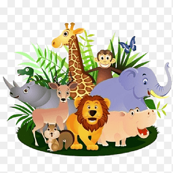
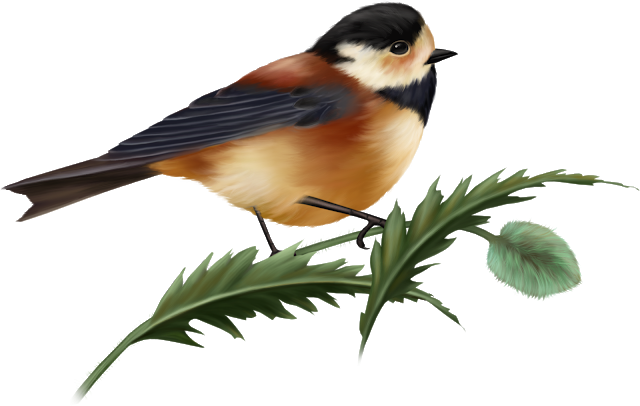
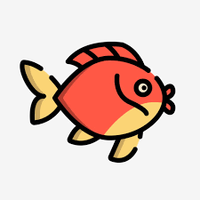

Тварини-це живі істоти, які добувають для себе їжу та ведуть активний спосіб життя. Тварини живуть по всій Землі, тобто всюди: у лісах, болотах, озерах, річках, морях, океанах та на інших містах суходолу. Є тварини які харчуються рослинами-їх називають травоїдними, також є тварини які харчуються м'ясом-м'ясоїдні. А деякі тварини взагалі їдять й м'ясо, і рослини-таких тварин називають всеїдними, тому що вони їдять все(м'ясо та рослини). До рослин також відноситься трава(трава-це також рослина). Усі тварини ростуть, але кожна тварина росте по своєму. Якась швидше, якась повільніше. Хтось виростає більшого розміру, а хтось меншого. Все це зависить від того яка це тварина та яка вона віком(який в неї вік).
Тварини поділяють на 6 груп:
| Звірі | Птахи | Риби |
|  |  |  |
| Земноводні | Комахи | Плазуни |